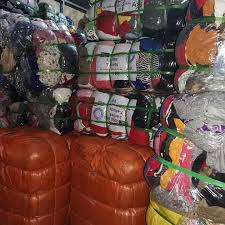

About Us
We are the home for all your thrifts info in Nigeria. We offer the latest info on where, how and what to do to get cheap and affordable thrifts.

Welcome to our home of thrifts.Thrift clothes, also known as "okrika", are second-hand clothing items that are sold in Nigeria.The term “Okrika” describes the thrift market culture in Nigeria. For individuals raised in modest homes, donning thrift clothing both as daily attires and for special occasions is commonplace